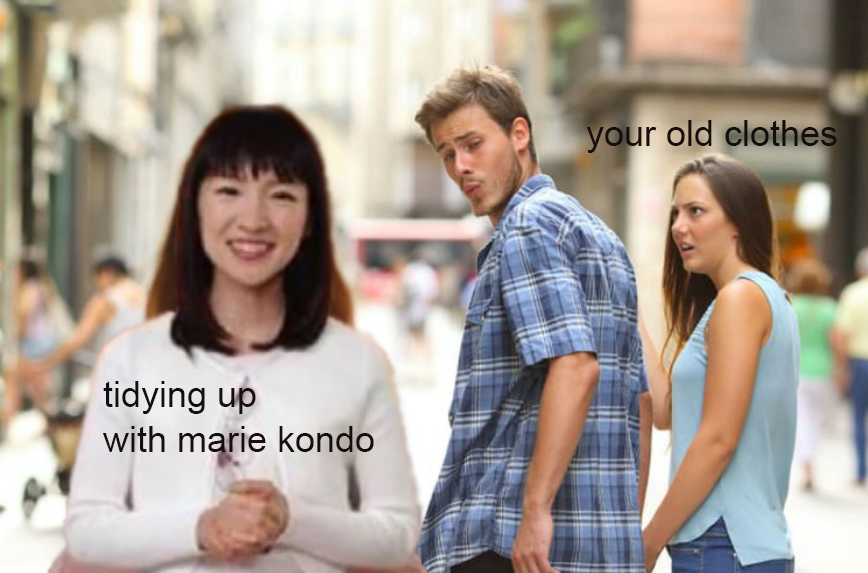

This project was created using Adobe Photoshop.
This new meme features the distracted boyfriend meme, and the does it spark joy meme.
Marie Kondo is getting more famous because of her Netflix show that features her cleaning different houses of people. She would ask the homeowners if the clothing still "sparks joy?". This meme is getting famous especially in the Twitter Universe. I decided to mash it up with the distracted boyfriend. I captured the girlfriend as "old clothes", as her boyfriend looks at Marie Kondo. The girlfriend is scared because she may no longer spark joy for her boyfriend.
